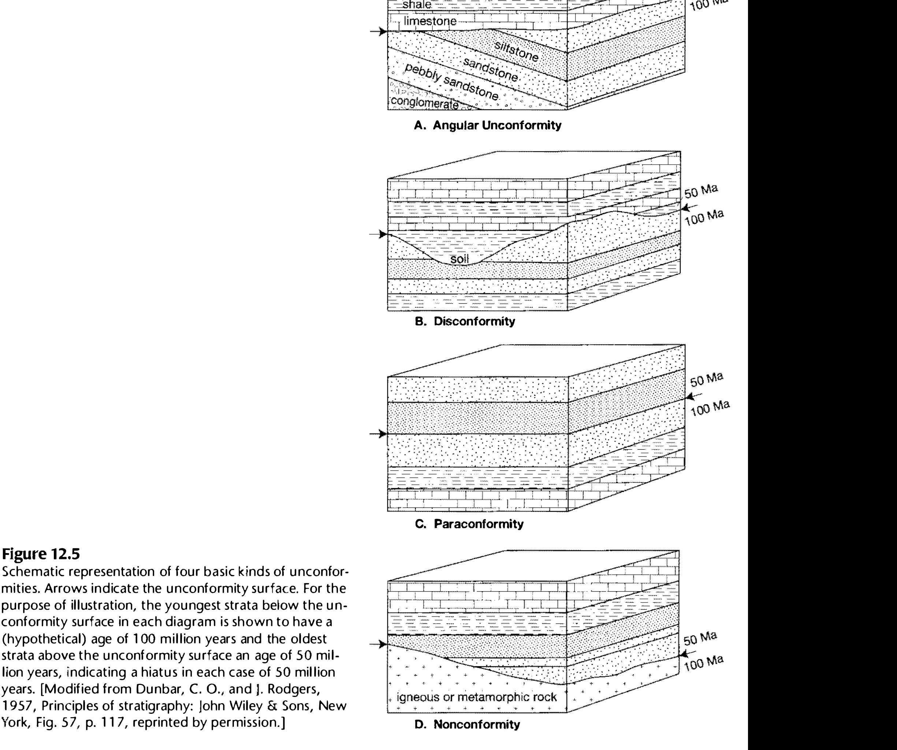
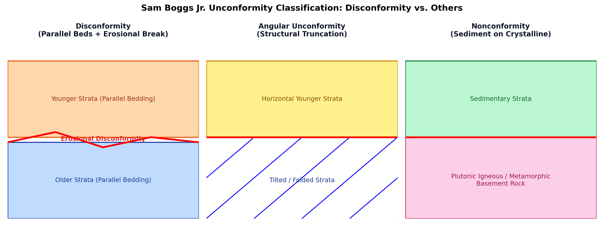

An unconformity is a substantial break, gap, or hiatus in the geological rock record representing a significant interval of non-deposition, subaerial weathering, and erosion. In classical stratigraphy (Dunbar & Rodgers, 1957; Boggs, 2011; Bangar, p. 207), unconformities are classified into four distinct types based on the geometric relationship between the older underlying rocks and younger overlying rocks:

In field geology, a disconformity is diagnosed by unmistakable physical evidence of subaerial exposure and erosion, despite perfect structural parallelism of the strata:

Candidates must clearly differentiate these terms in multiple-choice exams:
| Unconformity Type | Geometric Relationship of Strata | Nature of Contact Surface | Primary Geologic Cause |
|---|---|---|---|
| Disconformity | Parallel sedimentary strata above and below | Irregular, undulating erosional scour; paleosols; basal conglomerate | Eustatic base-level drop; broad epeirogenic uplift without tilting |
| Paraconformity | Parallel sedimentary strata above and below | Planar, knife-sharp bedding contact (no visible erosional relief) | Non-deposition in deep marine or starved basin; biostratigraphic gap |
| Angular Unconformity | Non-parallel; angular discordance between beds | Truncation surface cutting across inclined older strata | Orogenic tectonic compression, folding, uplift, and deep erosion (Hutton's Siccar Point) |
| Nonconformity | Layered sedimentary strata over crystalline rock | Eroded plutonic or high-grade metamorphic basement | Deep crustal exhumation of granite batholiths followed by marine transgression |